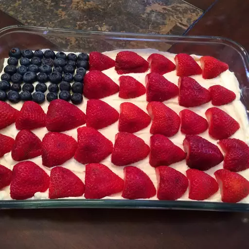

Home
Cheesecake

Description
You can make this lovely, sweet treat for 4th July or any patriotic holiday without turning on the oven! Besides the taste and light mousse-like texture, I think your guests will enjoy the iconic stars and stripes design provided by the fresh blueberries and strawberries.
Ingredients
- 2 cups graham cracker crumbs
- 1/2 cup unsalted butter, melted
- 2 tablespoons sugar
- 16 oz (450g) cream cheese, softened
- 1 cup powdered sugar
- 1 teaspoon vanilla extract
- 1 cup heavy whipping cream
- 1 cup fresh blueberries
- 1 cup fresh strawberries, sliced
Steps
- In a bowl, mix graham cracker crumbs, melted butter, and sugar until combined. Press into the bottom of a springform pan to form the crust. Chill in the refrigerator.
- In a large bowl, beat the cream cheese until smooth. Add powdered sugar and vanilla extract, and mix until well combined.
- In a separate bowl, whip the heavy cream until stiff peaks form. Gently fold the whipped cream into the cream cheese mixture.
- Spread the filling evenly over the chilled crust.
- Arrange blueberries and sliced strawberries on top in a decorative pattern.
- Refrigerate for at least 4 hours or until set. Serve chilled.